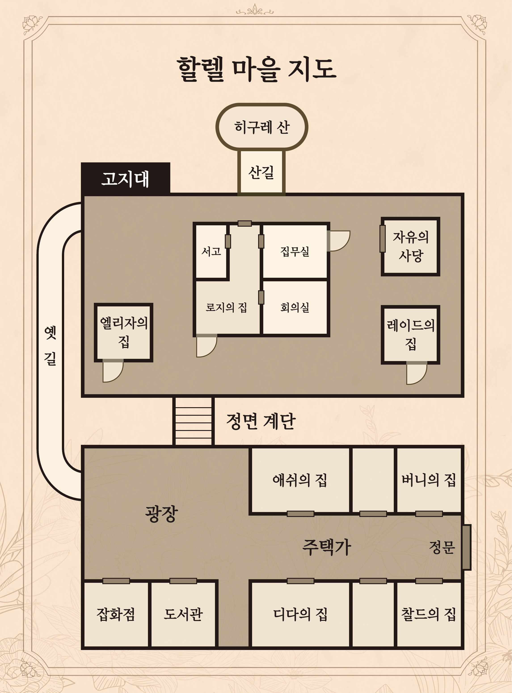

※ 하단의 내용은 포드의 설정서입니다. 다른 등장인물의 설정서를 읽지 않도록 주의해주세요. 줄거리 여기는 할렐 마을. 하늘은 짙은 구름으로 뒤덮여 달빛조차 닿지 않는다. 그래서 밤에 밖을 돌아다니는 사람은 없으며, 마을 사람들은 모두 일찍 잠에 든다. 산속 깊은 곳에 위치한 이 마을은 옛날부터 외부와의 접촉이 제한되어 왔기 때문에, 마을 규모는 작지만 사람들은 서로를 믿고 의지하며 살아왔다. 하지만 30년 전, 이 마을의 모습은 순식간에 변해버렸다. 평화로웠던 이 마을에서 어떤 사건이 일어난 것이다. 사람들은 마을 사람 중에 범인이 있다고 생각했고 점차 의심과 불신에 빠져들었다. 이 상황을 해결하기 위해 탄생한 것이 「그림자 찾기」 제도이다. 「그림자 찾기」를 통해 토론으로 죄를 지은 자를 심판할 수 있게 되었다. 그로부터 30년의 세월이 흐르고, 보름달 빛이 마을을 비추는 어느 날 밤. 할렐 마을 촌장 로지가 의문의 죽음을 맞이하게 된다. 사건의 진상을 밝히기 위해, 그의 아들인 레이드가 용의자들을 한곳에 불러 모았다. 할렐 마을의 앞날이 어떻게 될지는 참가자들에 의해 결정된다. 바로 지금, 「그림자 찾기」가 시작된다.
등장 인물 정보 그림자 찾기 참가자 애쉬(32): 마을에서 대장장이를 하는 남성. 디다의 아버지인 잭과 절친한 친구였다. 호프라는 애완견과 살고 있다. 버니(30): 마을의 사서를 하는 여성. 마을의 추방자 벨과는 사이가 좋았다. 마을의 역사에 대해 자세히 알고 있으며 현재도 그에 관한 정보를 모으고 있다. 찰드(38): 마을의 과학자. 이 마을에서 추방 당한 벨의 전 남편. 원래는 이 마을 출신이 아니고, 도시 리바에서 온 것 같다. 디다(19): 잭과 제니스 사이에서 태어난 외동딸. 현재는 빵집을 하며 생활하고 있다. 이전 「그림자 찾기」에서는 어머니와 아버지가 엘리자에 의해 처형되었다. 부모님이 사라진 이후로는 우울해 보인다. 엘리자(28): 촌장 로지와 그의 아들 레이드를 모시는 여성. 원래는 이 마을 출신이 아니고, 도시 리바의 고아원에서 로지가 데려온 것 같다. 냉철하고 명령에 복종하며, 「그림자 찾기」의 규칙을 준수한다. 이전 「그림자 찾기」에서는 디다의 부모인 잭과 제니스를 처형했다. 포드(?): 이 마을에서는 보지 못한 얼굴이다. 레이드(36): 촌장 로지의 아들이며, 그를 보좌하고 있다. 이전 「그림자 찾기」의 진행자이기도 했다. 참가자 외의 인물 로지(57): 30년 전에 취임한 할렐마을의 촌장. 오래전부터 이 마을에서 살아왔으며 전 촌장의 측근이었다. 이멜다: 로지의 전 아내이며, 30년 전 사건에서 목숨을 잃었다. 과학에 관해 뛰어난 견해를 가지고 있었다고 한다. 잭: 디다의 아버지. 「자유의 보옥」 도난 사건의 범인으로 이전 「그림자 찾기」에서 엘리자에 의해 처형되었다. 제니스: 디다의 어머니. 「자유의 보옥」 도난 사건의 범인으로 이전 「그림자 찾기」에서 엘리자에 의해 처형되었다. 벨: 찰드의 전 아내. 외부인과 정보를 교환한 죄로 「그림자 찾기」를 통해 할렐마을에서 추방되었다.
그림자 찾기 규칙 · 일출과 함께 시작하고, 일몰과 함께 종료합니다. · 3차 토론의 종료 후 「투표의 의식」에서 범인 「그림자」를 투표용지에 적습니다. (투표용지를 사전에 준비해 주세요.) 이 결정은 어떤 이유가 있더라도 결코 번복되지 않습니다. · 촌장 또는 촌장의 친족이 진행자가 되어 「그림자 찾기」의 진행자가 됩니다. 단, 진행자는 진행만 할 뿐 토론에 개입할 수 없습니다. · 모든 참가자가 거짓말을 할 수 있습니다. · 스스로 범인임을 자백하는 행위는 금지입니다. · 각 플레이어는 자신의 목적 달성을 위해 최선을 다해야 합니다. · 시나리오의 배역에 몰입하여 역할을 즐겨주시기 바랍니다.
할렐 마을 지도 
당신의 과거 [나의 사명] 내가 살고 있는 곳은 루델이라는 항구 마을이다. 주변은 산과 바다로 둘러싸여 있고, 많은 배가 사람과 물건을 실어 나른다. 루델은 다양한 사람들이 오가는 교차로 같은 마을이다. 처음에는 아무것도 없는 땅이었지만 옛날 사람들이 개척했다고 한다. 다른 곳에서는 살아갈 수 없게 된 사람들도 루델에 모여든다고 들었다. 나는 이곳에서 어머니와 여동생 겔다와 셋이서 살고 있다. 나와 겔다는 쌍둥이 남매다. 하지만 내가 먼저 태어났기 때문에 어머니도 겔다도 나를 오빠라고 부른다. 처음에는 부끄러웠지만, 최근에는 오빠라고 불리는 것도 나쁘지 않다고 생각하고 있다. 어머니는 이 마을에서 우편 배달 일을 하고 계신다. 일도 하면서 우리를 돌보는 것은 힘든 일이라고 생각한다. 하지만 어머니는 항상 미소를 보여주신다. 일로 피곤할 텐데도 힘든 기색은 전혀 보이지 않으신다. 「겔다, 포드. 너희는 누구보다도 남을 생각할 줄 아는 아이가 되어야 해.」 어머니는 무슨 일이 있을 때마다 이런 말씀을 하신다. 우리가 고개를 끄덕이면 어머니는 따뜻하게 웃어주시고 항상 우리를 가장 먼저 걱정해주신다. 나도 언젠가 어머니 같은 사람이 되고 싶다고 진심으로 생각한다. 어머니가 지금까지 우리에게 해주신 것에 대한 은혜를 잊지 않고 있다. 그래서 언젠가 꼭 어머니에 대한 효도로 갚고 싶다고 생각했다. 하지만 효도를 하는 것은 언제나 할 수 있는 것이 아니라는 것을 최악의 형태로 깨닫게 될 줄은 전혀 생각하지 못했다. 이것은 바로 어제 있었던 일이다. 「어머니, 다녀왔어요!」 나는 학교에서 돌아와 문을 열면서 말했다. 하지만 어머니의 대답은 없었다. 어머니의 신발은 현관에 있었으니 집에 계실 텐데... 내가 집 안을 찾아다니고 있을 때, 뒤에서 겔다의 목소리가 들렸다. 「오빠!」 그 목소리에는 울음소리가 섞여 있는 것 같았다. 「어머니가......! 어머니가......!」 겔다는 흐르는 눈물을 손으로 닦고 있다. 무슨 일이 일어났는지 영문도 모르는 나를 겔다는 병원으로 데려갔다. 내 마음은 불안으로 가득 찼다. 그리고 어느 병원의 병실로 들어서자, 어제까지 환하게 웃고 계시던 어머니가 매우 고통스러운 표정으로 누워 계셨다. 의사 선생님은 내 얼굴을 보더니 하나씩 지금까지의 일을 설명해주셨다. 어머니는 지금 중병에 걸려 있어서 방금 전 병원으로 실려 오셨다는 것. 그 병은 거의 연구가 진행되지 않았다는 것. 그리고 의사 선생님은 슬픈 표정으로 말씀하셨다. 「이 병은 열과 기침을 동반하고 온몸에 타는 듯한 통증이 와. 이 상태가 될 때까지 의식을 유지하고 있었다니 대단해. 마리 씨는 계속 참고 있었던 거야.」 마리는 내 어머니의 이름이다. 어머니는 우리가 걱정할까 봐 병을 숨기고 계셨던 거다. 의사 선생님께 이 얘기를 들었을 때, 나는 최근 며칠 동안의 어머니 모습이 떠올랐다. 어머니는 언제나와 다름없는 미소로 우리에게 밥을 해주시고, 청소를 하시고, 잠들 때까지 계속 곁에 있어 주셨다. 나도 겔다도 어머니가 오늘 쓰러지기 전까지 변화를 전혀 눈치채지 못했다. 어머니는 우리를 걱정 시키지 않기 위해 계속 혼자서 참아오셨던 거다. 나는 눈물이 넘쳐났다. 효도는 무슨... 어머니가 힘들어하시는 것조차 알아채지 못하다니. 「어머니의 병을 고칠 수 있는 사람은 없나요?」 나는 지푸라기라도 잡는 심정으로 의사 선생님께 물었다. 「떠오르는 사람이 있긴 한데......」 의사 선생님은 나에게서 시선을 돌리셨다. 그리고 그대로 말씀을 이어가셨다. 「확실히 리바 출신의 과학자 중 한 명이 이 병에 대해 연구하고 있다는 소문을 들은 적이 있어.」 「그 사람은 지금 어디에 있나요?」 나는 의사 선생님의 말씀에 끼어들 듯이 말했다. 그러자 의사 선생님은 잠시 간격을 두고 대답하셨다. 「여기서 산을 넘은 곳에 있는 할렐마을이야. 확실히 그 과학자의 이름은 찰드라는 사람이었을 거야.」 「제가 그 사람을 데려올게요.」 내가 그렇게 말하자 의사 선생님은 급히 말리셨다. 「무리야. 그곳은 외부에서 들어갈 수 없어. 게다가 곧 밤이 올 거야. 산에서 길을 잃을 게 뻔해.」 의사 선생님은 필사적으로 말리려 하셨지만 내 눈빛을 보더니 말리기를 포기하신 것 같았다. 「조금이라도 위험하다고 생각되면 돌아와. 알겠지?」 「알겠어요, 선생님.」 내가 병실을 나가려고 하자 의사 선생님은 나를 불러 세우셨다. 「이걸 가져가. 내가 쓴 소개장이야.」 그렇게 말씀하시며 의사 선생님은 나에게 봉투 하나를 건네주셨다. 나는 그것을 가방에 넣고 병원을 뛰쳐나왔다. 집으로 돌아가 필요한 물건들을 가방에 챙긴다. 이 가방은 어머니가 나를 위해 어머니의 친구에게 만들어달라고 한 것이다. 그때의 건강하셨던 어머니의 미소를 떠올리니 또 눈물이 날 것 같았다. 준비를 하고 있을 때 병원에서 뛰쳐나온 나를 걱정했는지 겔다가 집으로 돌아왔다. 「오빠, 무슨 일이야? 갑자기 병원에서 뛰쳐나가버리고......」 겔다는 숨을 헐떡이고 있었다. 나는 겔다를 향해 돌아서서 침착하게 대답했다. 「할렐마을에 다녀올 거야. 가서 어머니를 구할 방법을 찾아 올거야.」 그러자 겔다는 놀란 듯이 나를 쳐다보았다. 「안 돼! 오빠! 감시인에게 잡히면 죽임을 당할지도 몰라.」 겔다는 당황하고 있지만, 내 결정은 변함이 없다. 「괜찮아. 나를 믿어.」 「그렇다면...... 나도 갈래!」 겔다는 떨리는 목소리로 말했다. 용기를 내서 말하고 있다는 것이 전해져 왔다. 「겔다, 너는 어머니 곁에 있어 줘. 어머니 곁에 있으면서 힘이 되어 줘.」 겔다는 잠시 생각하다가 천천히 고개를 끄덕였다. 그리고 무언가를 떠올린 듯 입을 열었다. 「있잖아...... 나 본 적이 있어. 내가 모르는 글자였지만. 아마도 할렐 마을 사람들에게 보내는 편지인 것 같아.」 나는 어머니가 다른 사람에게서 편지를 받으셨던 것을 떠올렸다. 어머니는 언젠가 이 편지를 전달해야 한다고 말씀하셨었다. 「편지는 어디에 있어?」 「아마도...... 저기 서랍 안에 넣어두셨을 거야.」 겔다는 서랍을 가리켰다. 내가 서랍을 열자 그 안에는 몇 통의 편지가 들어 있었다. 가방 안에는 의사 선생님께서 주신 편지도 들어 있다. 하지만 나와 겔다는 할렐마을에서 사용되는 할렐 문자를 거의 읽을 수 없어서 무엇이 쓰여 있는지는 모른다. 루델에는 다른 곳에서는 살 수 없게 된 사람들도 있다. 어머니는 그 사람들과 자주 이야기를 나누셨다. 어머니는 그런 사람들로부터 어떻게든 보내야 하는 편지를 맡고 계신 것 같았다. 어머니는 언젠가 이 편지들을 전달할 생각이셨지만 내가 성장할 때까지는 나를 걱정하셔서 기다리고 계셨던 것 같다. 어머니가 하셔야 할 일은 내가 해야겠다. 그렇게 생각하며 나는 편지를 모두 가방 안에 넣었다. 어두워지면 빛이 없는 산길은 위험해진다. 그래서 서둘러 할렐 마을로 가려고 했다. 루델을 나와 산길을 올라갔다. 발걸음은 무겁지만 힘들다고 생각할 겨를이 없었다. 잠시 후, 아래쪽에 큰 저택 같은 곳이 보였다. 저기가 할렐 마을인가...... 안도의 한숨을 쉬는 순간, 나는 경사면에서 발을 헛디뎌 데굴데굴 비탈길을 굴러떨어졌다. 그리고 정신을 차려보니 어떻게 된 일인지 큰 저택의 뒤편에 있었다. 나는 반드시 어머니를 구해야만 한다. 아직 나는 은혜를 갚지 않았으니까. 어머니, 기다려 주세요. 제가 구해드릴 테니까요. - 당신의 과거 [나의 사명] 끝. 실물 설정서로 이어집니다.